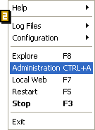

Instalar o EasyPHP
- Descarregar o EasyPHP no site www.easyphp.org
- Duplo clique sobre o ficheiro executável
- Seleccione o directório de instalação e siga as instruções
Iniciar o EasyPHP
 Não se pode dizer iniciar o EasyPHP como se fosse um simples programa, uma vez que se trata, na realidade, do arranque do servidor do Apache et de MySQL. Durante a instalação, é criado um atalho para o EasyPHP em "Iniciar/Programas/EasyPHP". Depois de ter sido iniciado o EasyPHP, surge um ícone ao lado do relógio na barra do Windows [1].
Clicar com o botão direito do rato sobre o ícone do EasyPHP permite aceder a diferentes opções de menu [2]:- Ajuda : Ajuda do EasyPHP
- Ficheiros Log : apresenta os relatórios gerados pelo Apache, MySQL e o EasyPHP
- Configuração: permite aceder às diferentes ferramentas de configuração
- Explorar : abre o directório "www" através do explorador do Windows
- Administração: abre a página de administração
- Web local: abre a web local
- Reiniciar: reinicia o Apache e o MySQL
- Iniciar/parar : Iniciar/parar o Apache e o MySQL
- Sair : encerrar o EasyPHP
Utilize o directório "www" ou os alias
Para que as suas páginas PHP sejam interpretadas, é necessário que coloque os seus ficheiros dentro do directório "www" ou dentro de um alias que tenha criado. Para visualizar as suas páginas basta abrir a "Web local" ou aceder aos seus alias através da página de administração.
As suas primeiras páginas em PHP
Existem inúmeras formas de programar em PHP e diversos programas de edição. Neste exemplo, utilizar-se-á um simples editor de texto.
Abra um novo ficheiro
Crie a estrutura de uma página HTML:
<head>
<title>A minha primeira página em PHP</title>
</head>
<body>
</body>
</html>
<head>
<title>A minha primeira página em PHP</title>
</head>
<body>
Data actual : <?php print (Date("l F d, Y")); ?>
</body>
</html>
Registo da página.
Crie um novo directório em "www" (ou dentro de um alias). Regsite a sua primeira pagina em PHP dando-lhe as seguintes extensões: php (aconselhado), php3, php4.
Não se trata de uma regra absoluta, mas corresponde à configuração do EasyPHP. Poderá ser-lhe útil, se pretender alojar as suas páginas num servidor em que a configuração seja diferente, modificar estas extensões.
No exemplo, seleccionou-se uma extensão en .php:
Rq : assegure-se que o Windows reconheça as extensões dos ficheiros sejam reconhecidos e vísiveis.
Visualização dos resultados.
* NUNCA FAZER : ir ao directório "www" (ou ao directório de um alias) e clicar sobre a sua página de exemplo. Ser-lhe-á apresentada uma mensagem de erro.
* FAZER : iniciar o EasyPHP, abrir a "Web local", seleccionar o directório de trabalho (ou um alias) e clicar sobre "date.php". Obterá uma página que lhe mostrará a data actual; Por exemplo : "Data actual : Wednesday March 22, 2006".
A si de criar os seus próprios projectos.